Projet apprentissage par renforcement

Jeu de la vie : terminé. ✔️
Forme de monde : torique
Règles d'évolution : base de John Horton Conway

Organisation :
Tous les membres du groupe ont fait la base du jeu de la vie (affichage de base, logique, etc)
et nous avons ensuite prit le meilleur de chacun pour la version finale :
➤ Taha a fait la grille torique, la détection des cycles et des états stables.
➤ Marc a fait la sauvegarde dans un fichier.
➤ Antoine a fait le chargement d'un fichier et le redimensionnement de la grille en cours de jeu
(fonctionnalité non présente dans le jeu final car pleine écran).
Fonctionnalités réalisées :
➤ configuration initiale entrée par l'utilisateur à la souris
➤ possibilité de sauvegarder / charger une configuration
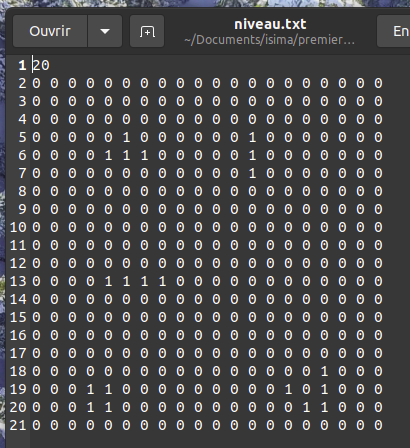
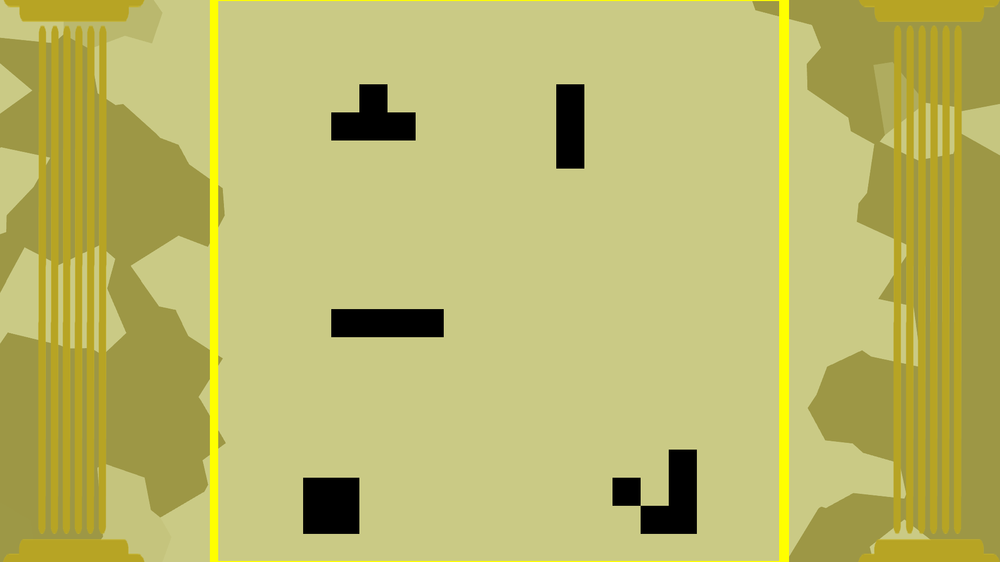
➤ flèches du clavier pour accélérer / freiner l'animation
➤ modification aisée des règles de transition
➤ détection de "l'état est stable" qui affiche un message
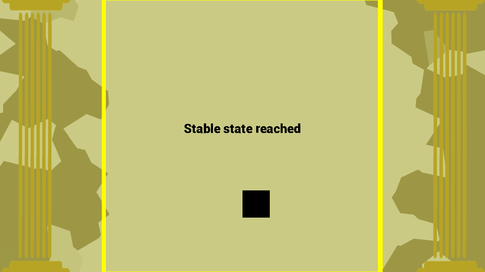
➤ [optionnel] détection de cycle (si taille de grille inf. à 7)
Comment jouer :
↑ & ↓ : choix taille grille
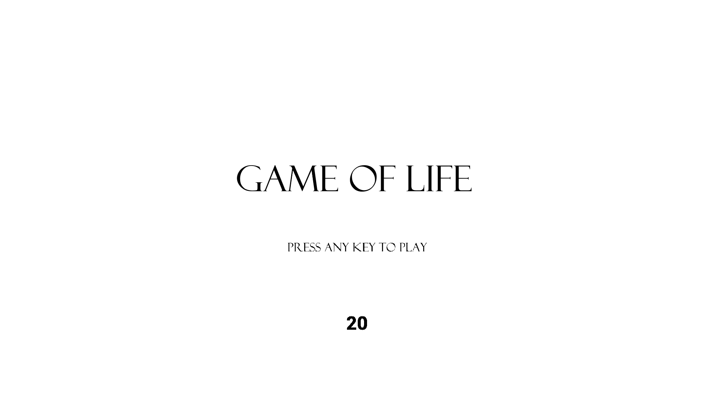
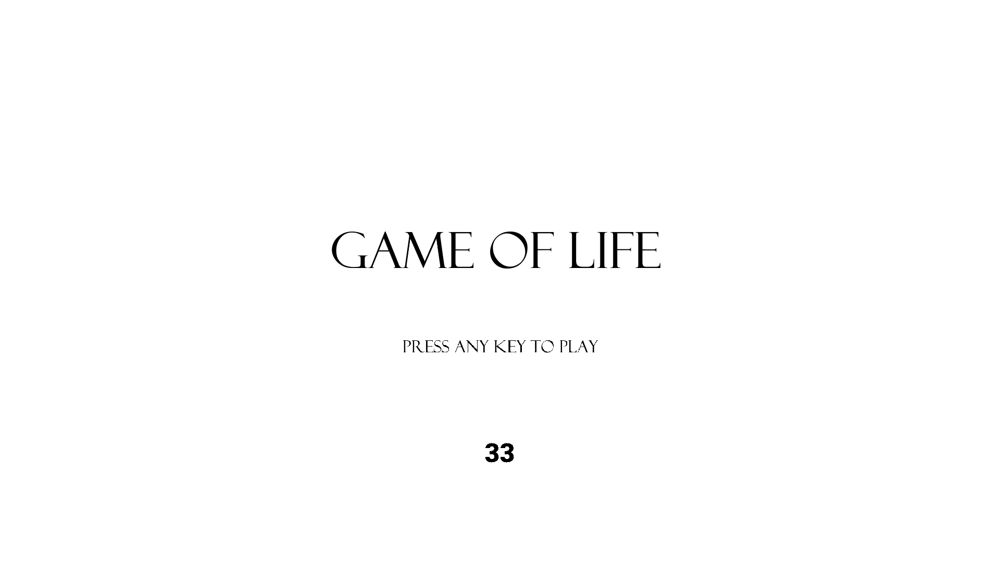
→ : avance l'animation
s : sauvegarde grille dans map.txt
x : quitte le jeu
Comment lancer le programme :
➤ classique : ./run
Avec le mode classique on passe par le menu où on peut choisir la taille de la grille de jeu. La grille
commence totalement vide.
➤ chargement : ./run --tailleGrille --fichier
Avec ce mode, on se retrouve directement face au jeu. La grille a la taille --tailleGrille et est remplie
avec le fichier --fichier. La taille --tailleGrille et la taille de la grille dans --tailleGrille est
vérifiée.
Chef d’œuvre : terminé. ✔️

Objectifs du chef d’œuvre :
Mettre en œuvre tout ce qui a été vu sur la SDL, en créant un mini jeu.
Nous proposons un jeu totalement différent (validé par l'enseignant).
Ce n'est qu'un exercice et il ne faudrait pas lui accorder plus d'une journée : nous avons passé 2 jours sur cet exercice.
Notre jeu mets en œuvre une chaîne de Markov afin de gérer le comportement d'au moins un élément du jeu (le feu).
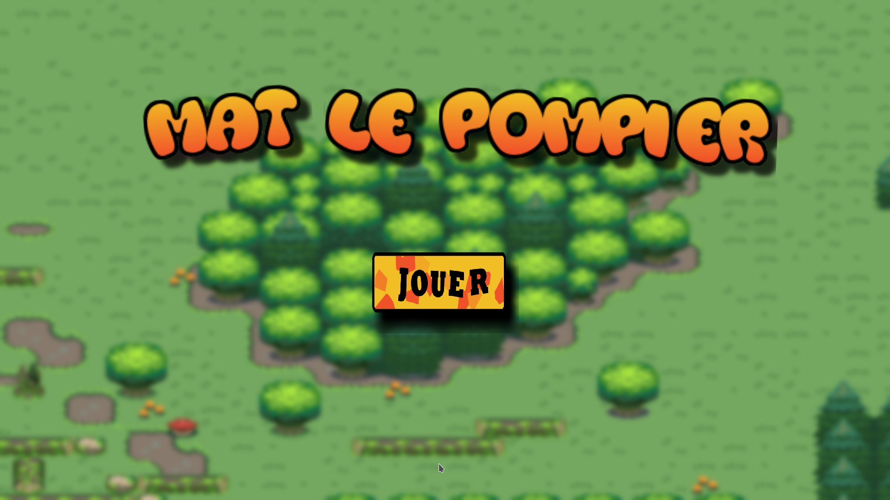
But du jeu :
Empêcher la propagation du feu en éteignant les flammes avec vos seaux d'eau.
Chaîne de Markov :
Notre chaîne de Markov se déploie sur le comportement du feu.
Il y a 5 états pour un feu :
➤ s'éteint
➤ étincelle
➤ petit feu
➤ feu fort
➤ se propage
Un tableau de Markov pour l'évolution du feu peut être comme ceci :
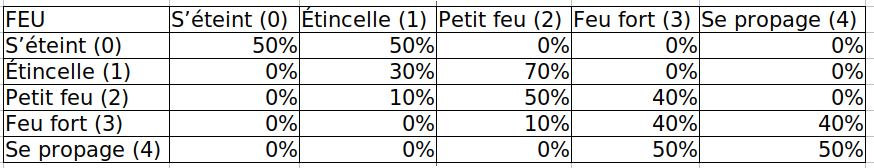
Le tableau dans le programme est généré depuis le fichier texte markov.txt.
Détaillons une ligne de ce tableau. Prenons la ligne Étincelle (1).
Elle modélises qu'une Étincelle (1) à 30% de chance de rester une Étincelle (1) et
70% de devenir un Petit feu (2). Nous avons remplis ce tableau afin d'approcher une
forme de comportement réel tout en donnant du challenge aux joueurs.
S'éteindre (0) et Se propage (4) :
Un feu peut être éteint (0) et existé ! Il modélise un départ de feu soudain.
L'état Se propage (4) modélise la multiplication du feu. Dans cet état, le feu
a une probabilité uniforme de se propager en croix autour de lui. Il est effectivement
créé s'il n'y a pas déjà un feu ou une source d'eau !
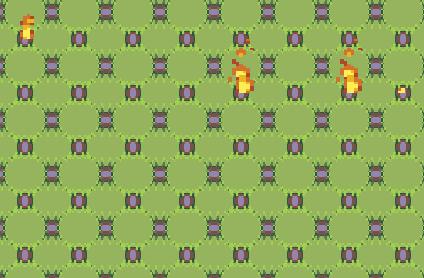
devient:
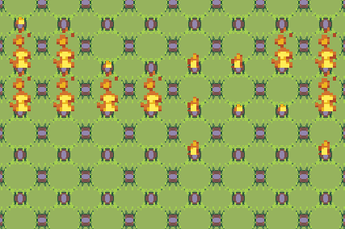
Organisation de l'équipe :
Nous avons travaillé avec Git et l'utilisation des branches. Nous avons rapidement
séparé le travail comme suit :
➤ Taha Belkhiri : toute la partie visuelle (carte, assets, menu, dessins, implémentations) et les animations.
➤ Marc Beret : structure et mécanique du feu; chaîne de Markov; propagation du feu.
➤ Antoine Meyer : logique du personnage (collisions); gestion du clic et de ses actions possibles.
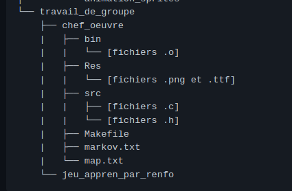 →
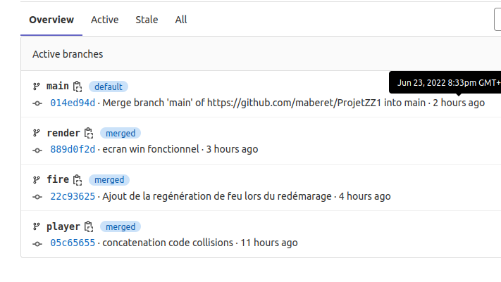
Modélisation :
Chaque élément du jeu doit être modélisé. Voilà nos modélisations (non exhaustives) de nos
principaux éléments :
➤ le pompier : position (x,y); nombre de seaux d'eau courant; vitesse de déplacement; nombre de points
de vie courant; dernière fois qu'il a touché le feu.
➤ le feu : position (x,y); état (étincelle, petit feu, etc).
➤ liste chaînée des feux courants : structure de feu; pointeur sur chainon suivant.
➤ la carte : générée depuis le fichier map.txt; dimension (20 cases par 20).
Animation :
➤ le pompier a 3 animations : Se déplace, Immobile et Vient de subir des brûlures.
➤ le feu a différentes tailles suivant son état.
➤ les points de vie ont une petite animation de mouvement.
Règles :
➤ éteindre le feu : Mat le pompier ne peut éteindre le feu que dans un rayon de
une case autour de lui. Si jamais le joueur clique sur une case non accessible, il
perd un seau d’eau inutilement donc attention !
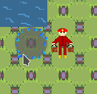

➤ remplir les seaux : Quand Mat se trouve à une case de portée d’une
source d’eau il peut remplir ses seaux en cliquant sur l’eau.
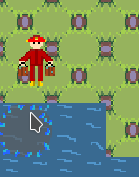
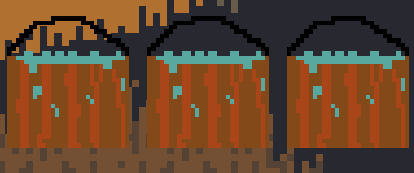
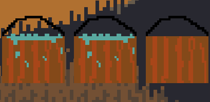
➤ vie du pompier : Mat le pompier dispose de 3 point de vie. Il en perd
un à chaque fois qu’il entre en collision avec un feu.
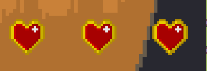
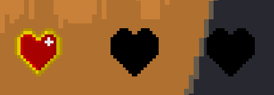
➤ collisions : Mat le pompier ne peut pas traverser des arbres ou marcher sur l’eau.
Il ne peut pas non plus sortir de la carte.
➤ prochain feu : Un timer annonce la prochaine évolution des feux (vague de propagation
du feu, augmentation du feu, diminution du feu, etc).
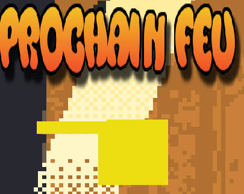
➤ score : Chaque feu éteint correspond à un point.
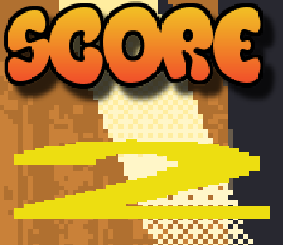
➤ conditions de victoire : Mat gagne quand il a éteint tous les feux.
Le score est le nombre de feux éteints : il doit être le plus petit possible.
Nous n'avons pas eu le temps de faire un écran de victoire..
➤ conditions de défaite : Le joueur perd si Mat n'a plus aucuns points de vie.
Il arrive alors sur un écran de défaite et peut choisir de recommencer une partie
ou de quitter le jeu.
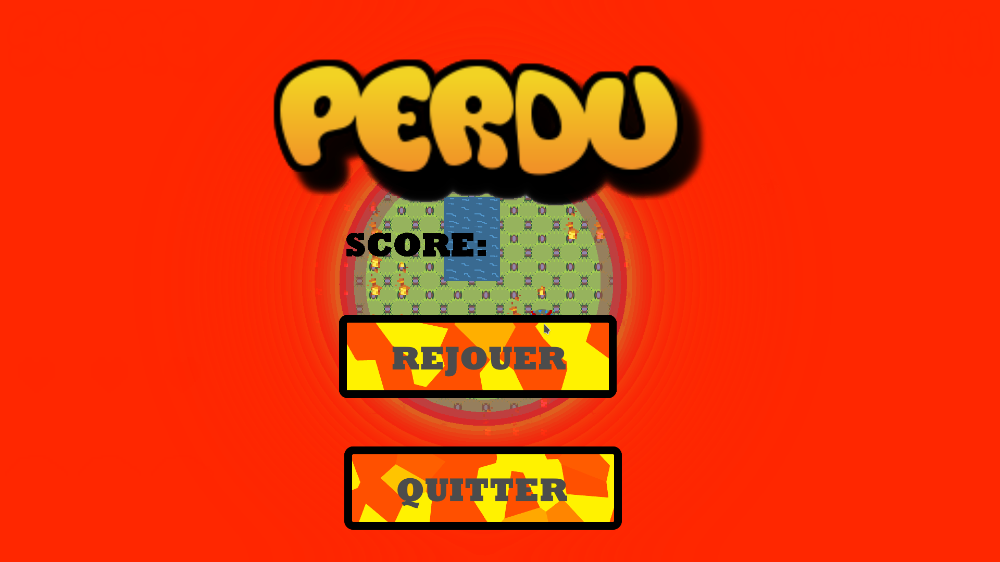
üî• Tous les feux sont √©teints.